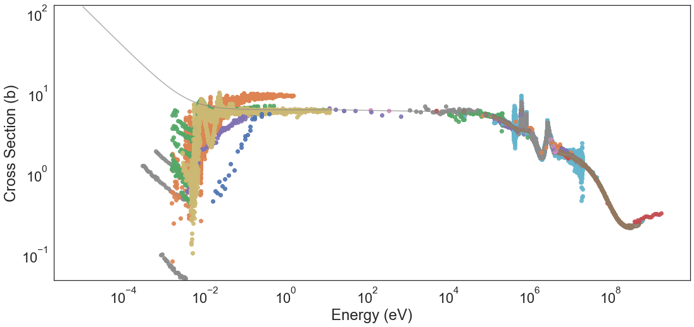
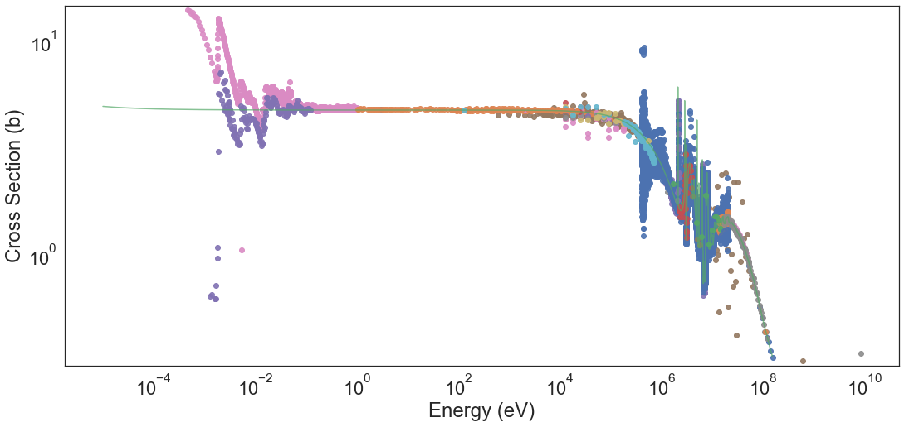
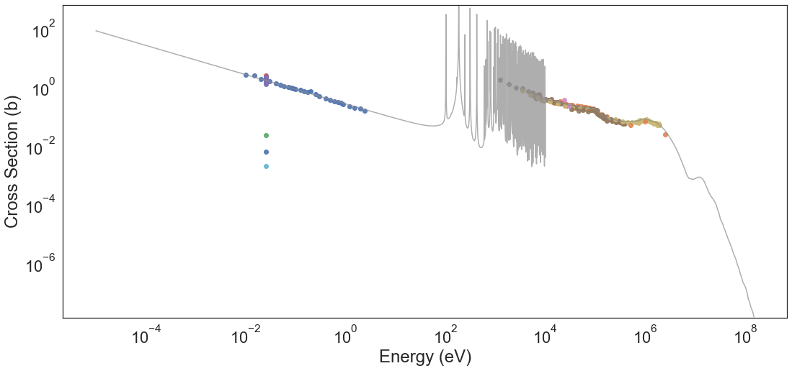

Incorrect Experimental Campaigns¶
As we know, EXFOR is an experimental database, and incorrectly reported cross sections or wrongly performed experimental campaigns exist. We intend to mark these and provide filtering operations that allow any researcher applying ML methods to neutron (or other projectiles) induce cross sections. These rules can be helpful and save computational resources wasted on fitting models on incorrect data. The outlier fraction is high enough to warrant these investigations rather than training robust models.
For now, this notebook will be updated with cross sections that merit further investigation and potential elimination from the training dataset used in ML algorithms.
[1]:
# # Protoype
# import sys
# sys.path.append("../..")
[26]:
import seaborn as sns
import nucml.exfor.data_utilities as exfor_utils
import nucml.datasets as nuc_data
[27]:
# sns.set(font_scale=1.3)
sns.set(font_scale=2.5)
sns.set_style("white")
[28]:
# Setting up the path where our figures will be stored
figure_dir = "./Figures/"
[5]:
df = nuc_data.load_exfor()
INFO:root: MODE: neutrons
INFO:root: LOW ENERGY: False
INFO:root: LOG: False
INFO:root: BASIC: -1
INFO:root:Reading data from C:/Users/Pedro/Desktop/ML_Nuclear_Data/EXFOR/CSV_Files\EXFOR_neutrons/EXFOR_neutrons_MF3_AME_no_RawNaN.csv
INFO:root:Data read into dataframe with shape: (4255409, 104)
INFO:root:Finished. Resulting dataset has shape (4255409, 104)
[29]:
df.MT = df.MT.astype(int)
Beryllium-9(N,TOT) Cross Section¶
[38]:
kwargs = {"nat_iso":"I", "one_hot":False, "alpha":0.7, "legend":False, "interpolate":False,
"log_plot":True, "ref":True}
be_exfor_endf = exfor_utils.plot_exfor_w_references(df, 4, 9, 1,
get_endf=True,
error=True,
save=True,
path=figure_dir,
figure_size=(18,8),
**kwargs)
INFO:root:EVALUATION: Extracting data from C:/Users/Pedro/Desktop/ML_Nuclear_Data/Evaluated_Data\neutrons/Be009/endfb8.0/tables/xs/n-Be009-MT001.endfb8.0
INFO:root:EVALUATION: Converting MeV to eV...
INFO:root:EVALUATION: Converting mb to b...
INFO:root:EVALUATION: Finished. ENDF data contains 444 datapoints.
INFO:root:Extracting samples from dataframe.
INFO:root:EXFOR extracted DataFrame has shape: (36367, 104)

Carbon-12(N,TOT) Cross Section¶
[39]:
kwargs = {"nat_iso":"I", "one_hot":False, "alpha":0.7, "legend":False, "interpolate":False,
"log_plot":True, "ref":True}
c_exfor_endf = exfor_utils.plot_exfor_w_references(df, 6, 12, 1,
get_endf=True,
error=True,
save=True,
path=figure_dir,
figure_size=(18,8),
**kwargs)
INFO:root:EVALUATION: Extracting data from C:/Users/Pedro/Desktop/ML_Nuclear_Data/Evaluated_Data\neutrons/C012/endfb8.0/tables/xs/n-C012-MT001.endfb8.0
INFO:root:EVALUATION: Converting MeV to eV...
INFO:root:EVALUATION: Converting mb to b...
INFO:root:EVALUATION: Finished. ENDF data contains 1338 datapoints.
INFO:root:Extracting samples from dataframe.
INFO:root:EXFOR extracted DataFrame has shape: (23562, 104)

Tungsten-184(N,G) Cross Section¶
[50]:
kwargs = {"nat_iso":"I", "one_hot":False, "alpha":0.7, "legend":False, "interpolate":False,
"log_plot":True, "ref":True}
c_exfor_endf = exfor_utils.plot_exfor_w_references(df, 74, 184, 102,
get_endf=True,
error=True,
save=True,
path=figure_dir,
figure_size=(18,8),
**kwargs)
INFO:root:EVALUATION: Extracting data from C:/Users/Pedro/Desktop/ML_Nuclear_Data/Evaluated_Data\neutrons/W184/endfb8.0/tables/xs/n-W184-MT102.endfb8.0
INFO:root:EVALUATION: Converting MeV to eV...
INFO:root:EVALUATION: Converting mb to b...
INFO:root:EVALUATION: Finished. ENDF data contains 34673 datapoints.
INFO:root:Extracting samples from dataframe.
INFO:root:EXFOR extracted DataFrame has shape: (202, 104)
